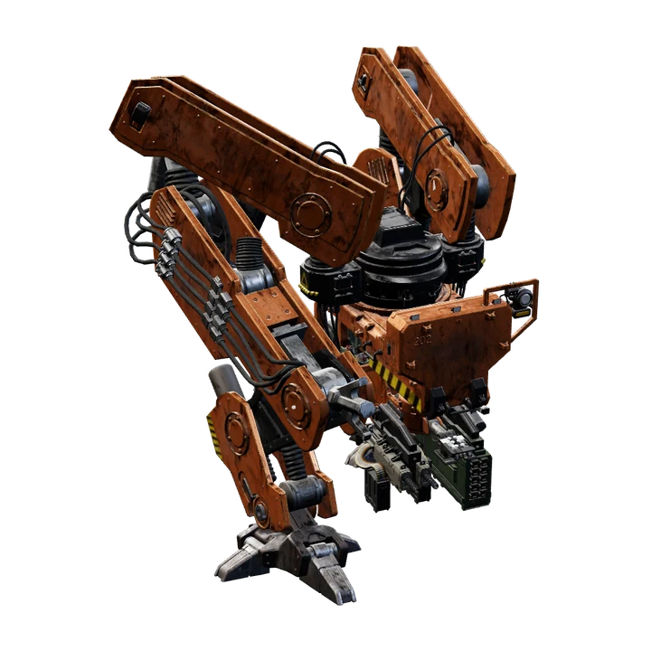
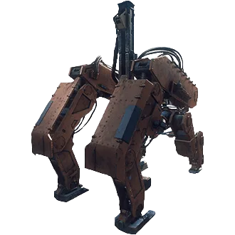
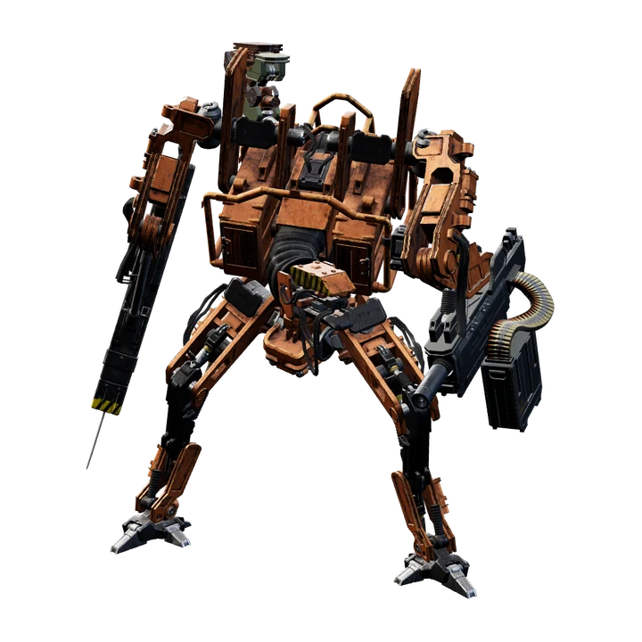

Factions and machine types11 types
The machines that took over Sweden, built by the FNIX company. Four regular classes: Prototype, Military, FNIX and Apocalypse.

Tank4 classes · 12 layouts · 9,990–25,787.5 HP
Harvester4 classes · 8 layouts · 4,725–11,256.6 HP
Hunter4 classes · 9 layouts · 880–3,542.4 HP Tick5 classes · 11 layouts · 12.5–31.25 HP
Tick5 classes · 11 layouts · 12.5–31.25 HP Seeker4 classes · 4 layouts · 112.6–290 HP
Seeker4 classes · 4 layouts · 112.6–290 HP Runner4 classes · 7 layouts · 125–437.3 HP
Runner4 classes · 7 layouts · 125–437.3 HP
The Soviet machines arrived later in the story. Their classes have their own names: Scout, Soldier and Spetsnaz.


Pictures rendered from the game's own 3D models.
The class system
Every machine type comes in classes, and a higher class is tougher, better armed and has keener senses. The in-game name shows the class after the type, for example HUNTER - FNIX Class.
| Faction | Class | Types | Layouts | About |
|---|---|---|---|---|
| Swedish | Prototype | Tank, Harvester, Hunter, Tick, Seeker, Runner | 11 | The first and weakest generation of the Swedish machines. |
| Swedish | Military | Tank, Harvester, Hunter, Tick, Seeker, Runner | 12 | The second generation: tougher, with more weapon choices. The only class with 'green' layout variants in the files. |
| Swedish | FNIX | Tank, Harvester, Hunter, Tick, Seeker, Runner | 15 | The third generation, named after the company that builds the machines. Many FNIX machines carry Ticks. |
| Swedish | Apocalypse | Tank, Harvester, Hunter, Tick, Seeker, Runner | 11 | The strongest regular class, with fire, radiation and toxin weapons (Wall of Flame, radiated blades, a contaminated submachine gun, cluster mines). |
| Swedish Rival | Rival | Reaper | 1 | A single unique machine: the Reaper, a Tank. |
| Event | Event | Gnome Tick | 2 | A special Tick class of the game's events, with its own senses. |
| Soviet | Scout | Firebird, Lynx, Wolf | 4 | The first and weakest class of the Soviet machines. |
| Soviet | Soldier | Firebird, Lynx, Wolf | 6 | The second Soviet class. |
| Soviet | Spetsnaz | Firebird, Lynx, Wolf | 8 | The strongest regular Soviet class. |
| Soviet Rival | Rival | Vulture | 1 | A single unique machine: the Vulture, a Firebird. |
How much tougher is each class?
Average total component health of a layout, per type and class, with the factor compared with the first class of that type in brackets. From Prototype to Apocalypse, the Swedish types gain ×2.4 to ×3.5 in total health; the exception is the Seeker, whose Prototype is the toughest of its classes.
| Type | Prototype | Military | FNIX | Apocalypse |
|---|---|---|---|---|
| Tank | 9,990 HP | 14,309.1 HP (×1.43) | 19,100 HP (×1.91) | 24,954.2 HP (×2.5) |
| Harvester | 4,725 HP | 6,902.2 HP (×1.46) | 9,251.6 HP (×1.96) | 11,256.6 HP (×2.38) |
| Hunter | 940 HP | 1,549.4 HP (×1.65) | 1,999.4 HP (×2.13) | 2,809.1 HP (×2.99) |
| Tick | 12.5 HP | 18.8 HP (×1.5) | 20.8 HP (×1.67) | 31.2 HP (×2.5) |
| Seeker | 290 HP | 112.6 HP (×0.39) | 150.4 HP (×0.52) | 187.4 HP (×0.65) |
| Runner | 125 HP | 262.5 HP (×2.1) | 350.2 HP (×2.8) | 437.3 HP (×3.5) |
Every machine compared36 machines
One row per machine type and class. Layouts counts the distinct layouts (the green variants of Military machines are counted with the layout they copy). Lowest / highest is the total component health of the weakest and the toughest layout, armour the share of the toughest layout's total that sits in armour plates, and sight how far it notices you standing in the open while unaware (more in detection & stealth). Click a column header to sort.
Total component health: All component and armour hit points added up. The game keeps no separate overall health bar value in a readable file, so use this as a size comparison, not an exact kill threshold.
More about machines
- Machine weapons: the damage of every machine weapon, with the machines that use it.
- Detection & stealth: sight and hearing distances per stance for every machine.
- Difficulty & co-op: how difficulty and the number of players scale machine health and damage.
- Rivals: rival machines, their levels and titles.